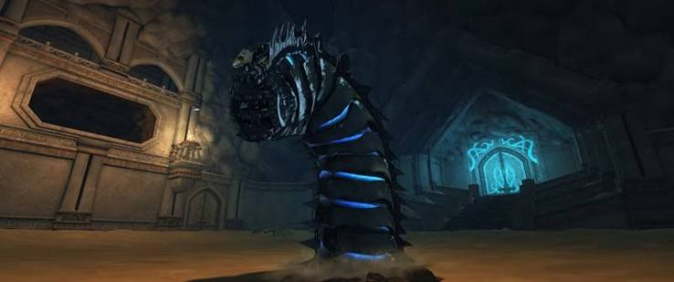

DUNGEON MECHANICS
LAIR OF THE MAD MAGE
Kill the mimics. Break the boulders. Don't empower the bloody scorpions.

OVERVIEW
LAIR OF THE MAD MAGE
Lair of the Mad Mage has three main boss encounters: Arcturia, the Bore Worm and Trobriand.
The important mechanics are mimic control, cocoon healing, boulder destruction, polarity positioning and careful handling of Trobriand's scorpions.
DUNGEON HAZARD
WRAITHS
- Wraiths can grab a player and drain their health until the Wraith is defeated.
- Allow the tank to engage first where possible.
- Kill the Wraith quickly if it grabs someone.
BOSS ONE
ARCTURIA
- Avoid all red telegraphs.
- Black butterfly patches on the floor disable players standing inside them.
- Move out of the black areas immediately.
- At around 80% health, Arcturia becomes immune and moves to the centre.
KEY MECHANIC
MIMIC PHASE
- When Arcturia phases, mimics spawn from the four corners of the room.
- Each player or assigned pair should cover a corner.
- Kill the mimics before they reach the centre.
- If a mimic reaches the centre, it spawns a Butterfly Golem.
- Butterfly Golems have high health and make the fight considerably harder.
- Preventing mimics from reaching the centre is the priority.
HEALER MECHANIC
COCOON
- Arcturia cocoons one player after returning from a phase.
- The cocooned player's health drops immediately.
- The healer must restore that player to full health before the cocoon bursts.
- If the player is not fully healed, the cocoon kills them when it explodes.
- Other players should stay away from the cocoon because the explosion can also kill nearby allies.
ARCTURIA
HYPO & RED EYE
- Arcturia uses a shared-damage Hypothermia mechanic.
- Group up around the marked player to split the damage.
- When the red eye appears, turn your character away from Arcturia.
- Looking at her during the red-eye mechanic causes a stun.
- She can also release a poisonous cloud that deals damage over time.
BOSS TWO
BORE WORM
- The Bore Worm alternates between attack phases and boulder phases.
- Avoid electrical pools on the ground.
- Rocks can erupt from the floor and knock players back.
- The Bore Worm can spin across the floor, launching players caught in the attack.
KEY MECHANIC
BOULDER PHASE
- Boulders move toward the centre of the arena.
- All DPS should focus on breaking them.
- Do not allow boulders to reach the centre hole.
- Each boulder that reaches the centre gives the Bore Worm an Overcharge stack.
- During this phase, the shifting sand pulls players toward the centre.
- Move against the pull while continuing to destroy boulders.
- Falling into the centre hole removes the player from the fight.
SHARED DAMAGE
ELECTRICAL CURRENT
- After the boulder phase, one player receives a shared-damage marker.
- The tank can take this mechanic while the healer keeps them alive.
- DPS should stay clear and avoid unnecessary damage.
- Watch for falling rocks during this sequence.
LOWER-DPS STRATEGY
TROBRIAND CONSTRUCTS
- Trobriand Constructs can appear during later Bore Worm phases.
- If the group is struggling with damage, leaving one construct alive can be useful.
- When the Bore Worm performs its sweeping attack, the construct can drain some of its energy.
- This reduces the Bore Worm's damage and allows the group to deal more damage afterward.
FINAL BOSS
TROBRIAND
- Do not immediately burn Trobriand when entering the arena.
- Scorpions sit on the outer rings of the arena.
- Damaging Trobriand while scorpions remain on the rings charges the electrical rings.
- If the charged rings touch the scorpions, they become empowered.
- Empowered scorpions are considerably more dangerous and can quickly overwhelm the group.
KEY MECHANIC
WAKE THE SCORPIONS
- Allow the tank to position Trobriand first.
- Trobriand's red cone attack should be aimed at the scorpions on the rings.
- The cone wakes them safely.
- Kill the awakened scorpions before returning damage to Trobriand.
- Continue repeating this process as new scorpions appear.
- Do not burn Trobriand while sleeping scorpions remain on the charged rings.
PAIR MECHANIC
POLARITY
- Two linked players receive polarity symbols.
- If both players have the same polarity, move close together.
- When the mechanic resolves, matching polarities push each other apart.
- If the two players have opposite polarities, move far apart to opposite sides of the arena.
- Opposite polarities pull players together when they resolve.
- Avoid colliding during the pull, as this applies a long-lasting damage reduction debuff.
FINAL PHASE
STORM CHARGE
- At around 30% health, Trobriand moves to the centre of the arena.
- Four canisters around the room activate.
- Destroy all four canisters immediately.
- A Storm meter begins charging during this phase.
- The higher the meter becomes, the stronger the incoming group-wide hit.
- Kill the canisters quickly to keep the Storm meter low.
- If the meter fills, the final hit can wipe the group.
MITIGATION CHECK
SURVIVE THE STORM
- After the canisters are destroyed, Trobriand releases a large group-wide attack.
- Healers should prepare strong damage reduction and defensive effects.
- Players who are downed by this attack can be permanently removed from the encounter.
- Survive the hit, then return to Trobriand and finish the fight.
QUICK REFERENCE
MAD MAGE SURVIVAL NOTES
- Mimics → kill before they reach centre.
- Cocoon → healer gets player to full HP.
- Red eye → turn away.
- Hypo → stack.
- Bore Worm boulders → destroy before centre.
- Centre hole → absolutely not.
- Trobriand scorpions sleeping → stop DPS on boss.
- Tank uses boss cone to wake scorpions.
- Same polarity → start together.
- Opposite polarity → start far apart.
- 30% → destroy all four canisters quickly.
- Storm hit → mitigation up and survive.